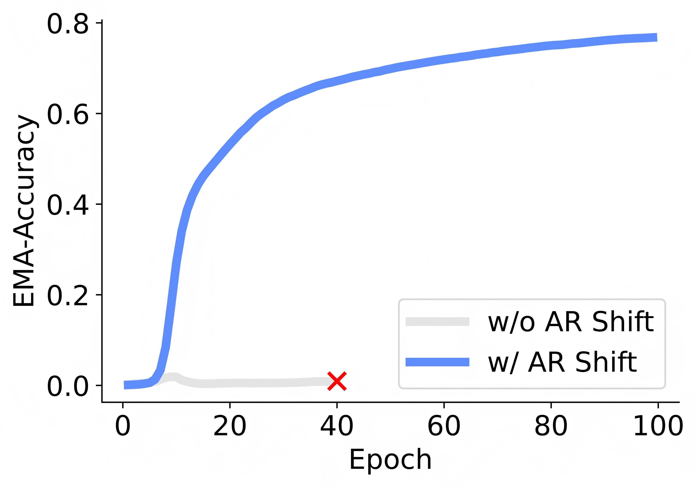
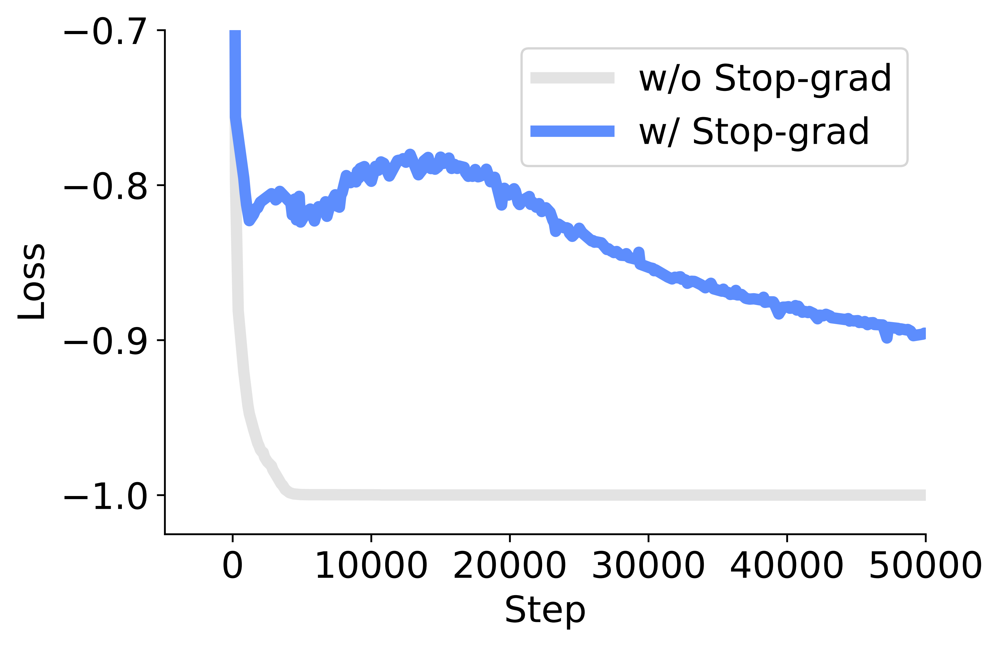
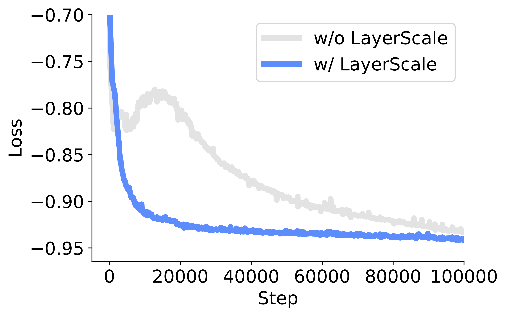
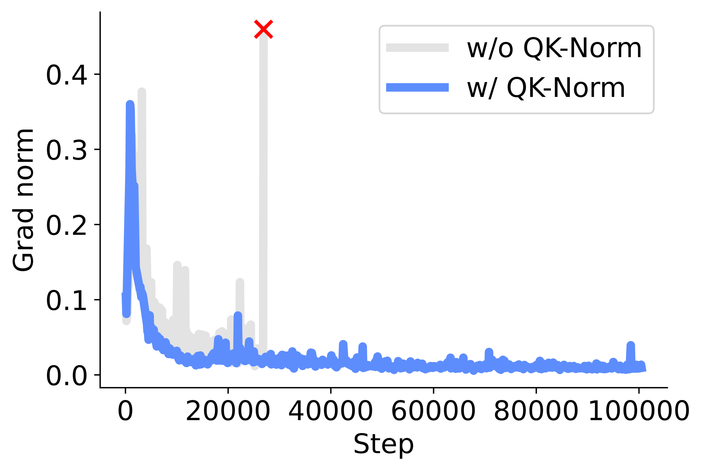
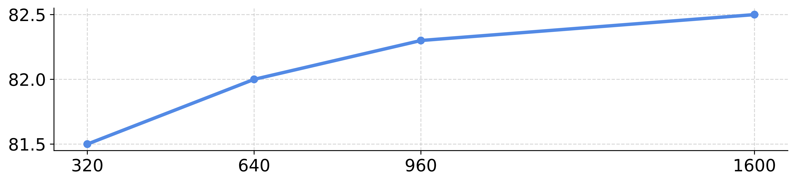
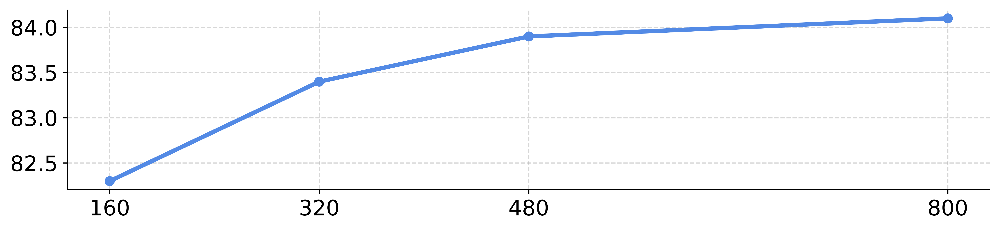

Overview
NEPA (Next-Embedding Predictive Autoregression) is a simple algorithm for generative pretraining. Instead of reconstructing continuous pixels or predicting discrete tokens, we train a autoregressive model to predict the embedding of the next input given all previous ones. This next-embedding objective is the only self-supervised signal—no pixel decoder, no contrastive pairs, and no task-specific pretraining heads.
- Minimal algorithmic design. NEPA relies solely on a next-embedding prediction loss to learn broad, generalizable models for diverse downstream vision problems—no decoders, no masking schedules, and no extra tricks.
- Native embeddings. No offline encoders. Autoregression operates on the embeddings from the encoder directly, where the encoder is any learnable function that maps data to vectors.
- Strong performance as ViT backbones. We train modern Vision Transformers with NEPA and achieve competitive performance after supervised fine-tuning.

Making NEPA Work in A Single Image
The core idea in our pretraining recipe is simple: given a sequence of image patch embeddings, predict the next one. However, naïve implementations of this next-embedding loss tend to diverge, collapse, or learn near-identity mappings. This section focuses on what it takes, at the algorithm level, to turn this predictive objective into a stable and useful training signal.
# f: embedding layer
# h: autoregressive model
for pixel_values in loader: # x, [B, H, W, C]
input_embed = f(pixel_values) # z, [B, T, D]
pred_embed = h(input_embed) # z_hat, [B, T, D]
loss = Dist(input_embed, pred_embed)
loss.backward() # back-propagate
update(f.param, h.param) # update parameters
def Dist(z, z_hat):
target = z.detach() # stop gradient
pred = z_hat[:, 0:T-1, :] # shift, [B, T-1, D]
target = target[:, 1:T, :] # shift, [B, T-1, D]
# Use any suitable distance metric.
pred = normalize(pred, axis=-1) # l2-norm
target = normalize(target, axis=-1) # l2-norm
return -(pred * target).sum(dim=-1).mean()What to attend? Autoregressive, not autoencoding. We treat each image as an ordered sequence of patches and enforce a causal ordering during pretraining: each patch can only attend to previous patches when predicting the next embedding. This turns the task into genuine prediction rather than reconstruction. When we allow bidirectional attention so that future patches are also visible, the optimization problem becomes easier, but the downstream performance drops, suggesting that "peeking at the answer" undermines the value of the predictive signal.
| Shifting | Causal masking | Stop-gradient | 50k-step acc (%) |
|---|---|---|---|
| × | ✓ | ✓ | fail |
| ✓ | × | ✓ | 73.6 |
| ✓ | ✓ | × | fail |
| ✓ | ✓ | ✓ | 76.8 |
What to predict? From reconstructing the current to predicting the next. We frame pretraining as predicting the embedding of the next patch in the sequence, rather than reconstructing the current input. Introducing an autoregressive shift prevents the model from "cheating" by copying its inputs, i.e., using patch t as input and patch t+1 as the target. Ablation studies show that without this shift, training quickly stalls and validation accuracy barely rises, whereas the shifted variant steadily climbs to a strong model.


Preventing model collapse with stop-gradient. The predictive loss compares the next embedding produced by the autoregressive head with the corresponding embedding from the encoder itself. If gradients are allowed on both sides, optimization quickly finds a trivial solution where almost all patches share the same vector and the loss saturates. By stopping gradients on the targets, we remove this collapsing direction: the encoder still learns through its contextual role, while the loss encourages diverse, expressive, non-trivial representations.
Random masking is not required. Reconstruction-based objectives such as masked image modeling often rely on high mask ratios to keep the task from becoming too easy. In the next-embedding setup, the difficulty is intrinsic: the next patch is always unknown, even when all previous patches are observed. Ablations over input masking ratios show that adding random masks consistently degrades transfer performance.
| Masking ratio | Top-1 accuracy (finetuned) |
|---|---|
| 0% | 78.2 |
| 40% | 76.4 |
| 60% | 75.7 |
Scaling NEPA as Vision Backbones
Building on the predictive objective from the previous section, we now show how to host it inside modern Vision Transformers and scale from base to larger backbones. The goal is to keep the training recipe simple—no decoders, no extra heads—while using a small set of architectural components to make deep, causal models stable and effective.

A causal vision transformer as a simple host. We instantiate the predictive loss on top of a standard ViT: patchify the image, project patches to embeddings, and stack pre-norm transformer blocks. The only structural change is to make attention strictly causal over the patch sequence so that each position can only attend to previous patches when predicting the next embedding. Within each block, we adopt a modern configuration with rotary positional embeddings (RoPE) for attention and SwiGLU feed-forward layers, so that the encoder closely resembles current high-performance ViT/LLM-style architectures.
| LayerScale | RoPE | QK-Norm | GatedMLP | 100k acc (%) |
|---|---|---|---|---|
| ✗ | ✗ | ✗ | ✗ | 78.2 |
| ✓ | ✗ | ✗ | ✗ | 77.4 |
| ✓ | ✓ | ✗ | ✗ | 80.2 |
| ✓ | ✓ | ✓ | ✗ | fail |
| ✓ | ✓ | ✗ | ✓ | 81.1 |
| ✓ | ✓ | ✓ | ✓ | 81.3 |
Making deeper transformers stable. When we scale this causal model to deeper and wider configurations, training can become fragile: losses may oscillate or gradients spike. We find that two lightweight normalization components are sufficient to stabilize the dynamics. LayerScale adds a small learnable scaling factor on each residual branch, so early layers start with a conservative contribution that gradually grows during training. QK-Norm normalizes queries and keys before computing attention logits, keeping their scale under control and preventing gradient explosions in attention layers.


Staying aligned with modern transformer design. Rotary positional embeddings provide a relative, translation-friendly notion of position that works naturally with causal attention and improves fine-tuning accuracy compared to absolute positional encodings. SwiGLU feed-forward layers bring the encoder in line with recent transformer practice and offer a modest boost over GeLU MLPs, without changing the overall structure of the predictive recipe. These choices ensure that the encoder can plug into existing vision and multimodal stacks with minimal friction.
From pretraining to ImageNet-1K classification. The same pretrained encoder is reused for ImageNet-1K without changing the pretraining setup: we simply add a linear classifier on top of the encoder outputs and fine-tune the model. This predictive model achieves competitive top-1 accuracy while keeping both pretraining and fine-tuning pipelines simple.
| Model | Pretrain task | Pretrain framework | Decoder | # FWD / step | Epochs | Acc (%) |
|---|---|---|---|---|---|---|
| ViT-B | ||||||
| MoCo v3-B | contrastive learning | siamese | mlp proj. head | 2 | 600 | 83.2 |
| BEiT-B | masked token pred | masked modeling | linear pred. head | 1 | 800 | 83.4 |
| DINO-B | self-distillation | siamese | mlp proj. head | N | 1600 | 83.6 |
| MAE-B | masked pixel pred | masked autoencoder | transformer decoder | 1 | 1600 | 83.6 |
| NEPA-B* | autoreg. embed pred | autoregression | none | 1 | 1600 | 82.5 |
| NEPA-B | autoreg. embed pred | autoregression | none | 1 | 1600 | 83.8 |
| ViT-L | ||||||
| MoCo v3-L | contrastive learning | siamese | mlp proj. head | 2 | 600 | 84.1 |
| iBot-L | self-dist & masked token pred | siamese & masked modeling | mlp proj. head | 4 | 1000 | 84.8 |
| BEiT-L | masked token pred | masked modeling | linear pred. head | 1 | 800 | 85.2 |
| MAE-L | masked pixel pred | masked autoencoder | transformer decoder | 1 | 1600 | 85.6† |
| JEPA-L | masked embed pred | siamese & masked modeling | transformer predictor | 2 | 300 | 85.2† |
| NEPA-L* | autoreg. embed pred | autoregression | none | 1 | 800 | 84.1 |
| NEPA-L | autoreg. embed pred | autoregression | none | 1 | 800 | 85.3 |
Scaling behavior with model size. Using this modern model, we scale the predictive pretraining from base to larger Vision Transformers under a fixed recipe on ImageNet-1K. Training remains stable across model sizes, and fine-tuning accuracy improves monotonically as the backbone grows. The resulting models are competitive with more complex masked-image or distillation-based pretraining methods.


Attention and Embedding Analysis
We study how the model organizes visual information by looking at its attention maps and learned embeddings. This reveals whether next-embedding prediction induces meaningful global structure.
Attention Map Analysis. We mark a query patch on images and visualize its attention maps. The maps are long-ranged and object-centric, focusing on semantically related patches and suppressing distractors, rather than spreading uniformly or staying purely local.
Embedding Analysis. We compare the predicted embedding of the next patch with all other patches in the same image and visualize the similarity. The predicted embedding is most similar to patches on the same object or region and much less similar to unrelated background, indicating embeddings that capture object-level structure rather than just local texture.
 ImageNet-1K validation samples (unseen during pretraining).
ImageNet-1K validation samples (unseen during pretraining).
 MSCOCO validation samples (out of distribution during pretraining).
MSCOCO validation samples (out of distribution during pretraining).
Conclusion and Future Work
This work revisits causal next-token prediction in the context of vision, not in pixel or token space, but directly in the embedding space of patch features. We show that simple next-embedding prediction, combined with a modern causal Vision Transformer, is sufficient to learn scalable and transferable visual representations. By treating patch embeddings as prediction targets, we avoid brittle, handcrafted pretext tasks and instead rely on the structure induced by the sequence itself. With only self-supervised pretraining on ImageNet-1K and a single forward pass without any decoder, our predictive encoder achieves competitive downstream performance while keeping the training pipeline simple.
Modality-agnostic potential. Many recent language models share input and output embeddings, effectively predicting the next embedding in a latent space—an idea closely aligned with our framework. Seen from this angle, our approach suggests a unifying view where different modalities can be trained under the same next-embedding objective, using embeddings as a common representational currency.
Generative potential. Our formulation also naturally points toward generative modeling. Coupling the autoregressive embedding predictor with an image decoder or diffusion-based generator could enable image synthesis and editing within the same framework that is used for representation learning. Exploring such models that jointly support strong representations and generation is an exciting direction for future work.